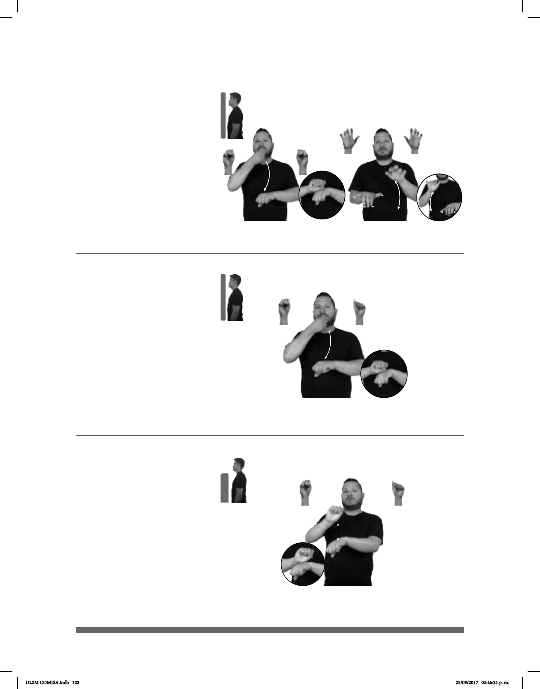

328
(S-103)
Seña: SC: I. y II.SB
I.MD y MB S.1; II. MD y MB
5.11
I. MD la palma inicia hacia adentro
y termina hacia fuera. MB palma hacia abajo; II.
MD y MB palmas hacia abajo.
I.MD de la boca a MB. MB a la altura
del pecho; II. MD y MB a la altura del pecho.
I. MD recto; II. MD y MB recto de
arriba hacia abajo repetida y alternadamente.
acción de teclear o capturar un texto.
1. sust. Persona que se encarga de las
labores administrativas de un organismo,
institución o corporación y desempeña las
funciones de extender actas, dar fe de los acuerdos
y custodiar los documentos de esa entidad. 2.sust.
Personaencargada de atender la correspondencia
y los asuntos administrativos de otra persona o de
un despacho.
SECRETARIA pro-ELLA COMPUTADORA CARTA ARCHIVO
La secretaria está capturando la carta.
Seña: SB
MD S.1, MB A.5
MD palma inicia hacia adentro y
termina hacia fuera. MB
palma hacia abajo.
MD de la barbilla a MB. MB a
la altura del pecho.
MD recto.
1. sust. Persona que se
encarga de las labores administrativas de un
organismo, institución o corporación y
desempeña las funciones de extender
actas, dar fe de los acuerdos y custodiar los
documentos de esa entidad. 2. sust. Persona
encargada de atender la correspondencia y
los asuntos administrativos de otra persona o
de un despacho.
(S-104)
pro-ELLA MUJER SECRETARIA GOBIERNO YA LLEGAR
La secretaria a cargo ya llegó.
(S-105)
Seña: SB
MD S.1, MB A.5
MD palma hacia
fuera. MB palma hacia abajo.
A la altura del pecho.
MD sobre MB.
La MD golpea a la
MB en línea recta repetidamente.
sust.f. Conjunto de
estudios que se realizan después de
los elementales y antes de la
preparatoria.
pro-YO ESTUDIAR HASTA SECUNDARIA DESPUES TRABAJAR pro-YO DESEAR
Voy a estudiar hasta secundaria y después quiero trabajar.
DLSM COMISA.indb 328 25/09/2017 02:46:21 p. m.